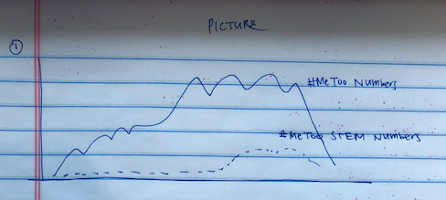
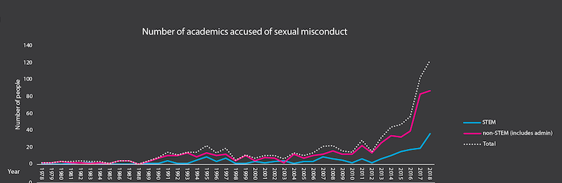
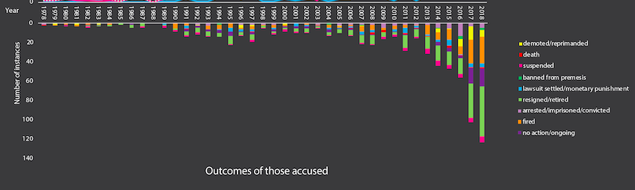
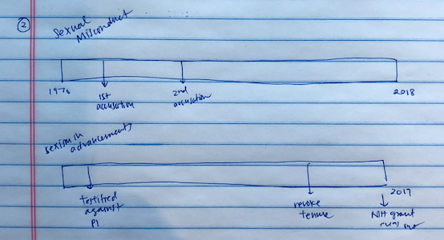
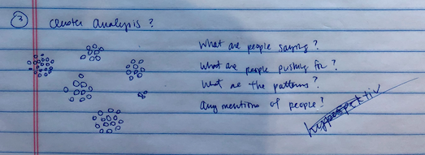

Gender inequality, sexual harassment, sexual assault--in recent years, these terms have been so commonplace in the collective colloquial verbatim that it does not strike as odd to hear a casual conversation about street harassment, or get caught up in a wave of public outrage over the latest figure convicted of sexual assault. And yet, this is but a contemporary phenomenon. Such a visible approach to matters of sexual harassment would have been unthinkable in the past; far from being the potentially empowering and validating act that it is now, to participate in public allegation meant a near complete emotional, social, and career suicide. On one hand, if women had the courage to speak up, their voices were devalued and experiences swept under the rug; on the other, women often barred themselves from speaking out due to the societally enforced burden of self-blame and shame. Shockingly, many women have had trouble even acknowledging their experiences as sexual violence--in a sweeping review conducted over 28 studies of women who were raped after the age of 14, it was found that 60.4% of the 5,917 women in the studies did not recognize their experiences as rape, even though it fit the standard definition. How did these attitudes towards sexual harassment, so entrenched in the cultural manifold our society, begin to shift?
We can attribute one of the movers of our cultural manifold to the now famous #MeToo movement. A term originally coined in 2006 by civil rights activist Tarana Burke, it reemerged in October of 2017 in the Twittersphere, where actress Alyssa Milano used it as a hashtag to highlight sexual abuse by the Hollywood titan Harvey Weinstein, calling out for fellow survivors of sexual violation to step forward and join in on highlighting similar experiences. Though not a new idea by any means, a global phenomenon of viral proportions ensued--similar hashtags popped up in every region of the world, and produced very tangible recognition of the legitimacy of women’s voices. We saw Harvey Weinstein and Bill Cosby fall to an uprising of women with the audacity to speak up. We saw incredible media coverage, not in the conciliatory tone often adopted when defending the perpetrator, but in, at the very least, a neutral perspective. In the New York Times, the number of articles that mention sexual harassment has spiked in the wake of the #MeToo movement: the number has tripled from 2016 to 2017, and quadrupled from 2016 to 2018. Indeed, sexual harassment is at last being portrayed by mainstream media as less epidemic than endemic, less isolated than pervasive.
The answer is not straightforward, though cautiously promising. Since the advent of the #MeToo movement, there has been a spike in activism within STEM fields as well. Several high-profile investigators have left their positions after sexual harassment investigations, including geneticist Francisco Ayala, cancer biologist Inder Verma, and astrophysicist Christina Ott. Over two years ago, Julie Libarkin, a professor at Michigan State University, started compiling a database of publicly available cases of sexual misconduct in academia. Now, this report includes over 700 cases of misconduct throughout US institutions. Looking at the numbers of cases across the years, there is a definite uptrend in reported cases since 2017, in both STEM and non-STEM fields.
insert graph: #MeToo vs #MeTooSTEM
insert graph 2: rates of misconduct reportings: first half of misconduct graph
The outcomes:
insert graph: maybe second half of quantitative poster but but more elaborated
Focus on notable cases: Inder Verma, Francisco Ayala, BethAnn McLaughlin
Timeline studies of cases?
Descriptive Text
cluster analysis
Descriptive Text